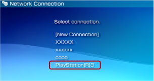

Netværk > Brug af Remote Play (via trådløst LAN på PS3™-systemet)
Brug af Remote Play (via trådløst LAN på PS3™-systemet)
Slut et PSP™-system til et PS3™-system via trådløst LAN i PSP™-systemet. Denne tilslutning er kun mulig på PS3™ systemer, der understøtter trådløst LAN.

Klargøring til brug
Første gang du bruger Remote Play, skal du registrere (parre) PSP™-systemet med PS3™-systemet. Registrer systemet under  (Indstillinger) >
(Indstillinger) >  (Remote Play indstillinger) > [Registrer enhed].
(Remote Play indstillinger) > [Registrer enhed].
Brug af Remote Play
1. |
På PS3™-systemet vælges |
|---|---|
2. |
På PSP™-systemet vælges |
3. |
Vælg [Connect via Private Network]. |
4. |
Vælg [PlayStation(R)3] på listen over forbindelser.  Hvis forbindelsen oprettes, vises PS3™-systemskærmen på PSP™-systemet. |
 (Netværk) >
(Netværk) >  (Remote Play).
(Remote Play). (Remote Play).
(Remote Play).Tips
- Remote Play kan bruges inden for rækkevidden af PS3™-systemets trådløse LAN-netværk.
- Hvis du aktiverer fjernstyret start på dit PS3™-system, kan du indstille dit system til automatisk at tænde (Wake On LAN). I dette tilfælde kan du spring pkt. 1 over. Yderligere oplysninger findes under (Indstillinger) > (Remote Play indstillinger) > [fjernstyret start] i denne vejledning.
Afslutning af Remote Play
Tryk på PS-tasten (HOME-tasten) på PSP™-systemet, og vælg derefter [Quit Remote Play] > [Quit and Turn Off the PS3™ System].
Tip
Vælg [Quit Without Turning Off the PS3™ System], hvis du bruger PS3™-systemet til at kopiere filer eller udføre download i baggrunden og andre opgaver, der kræver, at systemet er tændt.